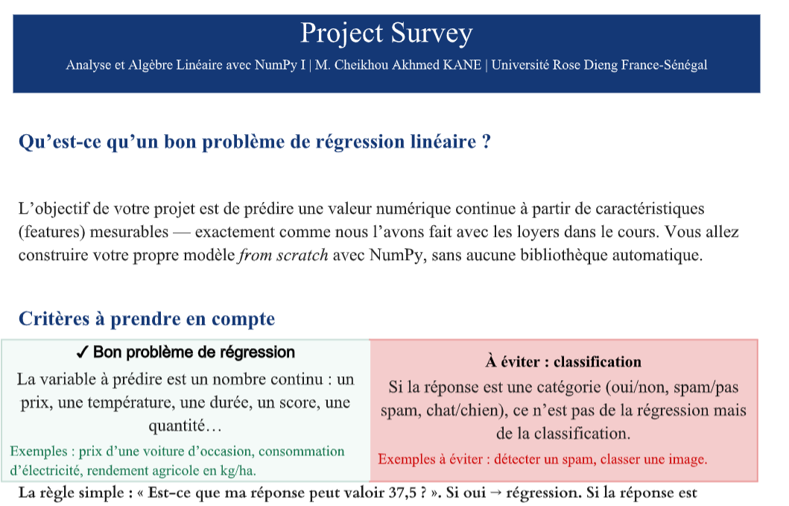

Description : Ce projet consiste à développer une application Python de prétraitement et nettoyage de données médicales pour une clinique. Les données proviennent d'un fichier patients_bruts.txt contenant 300 lignes de données patients collectées depuis plusieurs sources sur plusieurs années.
En traitant 300 patients réels, nous avons détecté et corrigé automatiquement des dizaines d'erreurs, produit un dataset propre de 185 patients prêts pour l'analyse. Ce travail nous prépare directement à l'utilisation future de bibliothèques comme NumPy et Pandas .
Nous comprenons maintenant ce qu'elles automatisent pour nous.
Projet 2 : Analyse des Habitudes de Consommation de Boissons — Cafétéria Universitaire
Description : Ce Projet de Statistique et Probabilités a pour objectif d'analyser la consommation de boissons faite par les étudiants à l'aide de différentes techniques statistiques. Nous allons utiliser un ensemble de données fictives qui contient des informations sur la consommation de boissons par les étudiants, telles que le type de boisson, la quantité consommée, et l'identifiant de l'étudiant.
Ce projet d'analyse des habitudes de consommation de boissons a permis de mettre en lumière plusieurs tendances chez les étudiants. Sur le plan univarié, le Soda (Gazelle) se distingue comme la boisson la plus prisée, avec une consommation moyenne de 4,025 verres par étudiant et une nette préférence pour les consommations du soir.
L'analyse bivariée révèle que la température extérieure influence directement les quantités consommées, et que des écarts existent selon le sexe et l'âge des étudiants dans leurs choix de boissons. Ces résultats confirment l'intérêt de croiser plusieurs variables pour mieux comprendre le comportement de consommation.
Du point de vue probabiliste, on observe que le café Touba représente environ 21 % des boissons consommées, et que 29 % des consommations ont lieu le matin — ce qui s'aligne avec les habitudes culturelles sénégalaises. En revanche, la consommation de jus par forte chaleur (15 %) et la forte consommation chez les garçons (3 %) restent des comportements plus marginaux.
Enfin, le volet dénombrement a permis de quantifier les possibilités combinatoires du système : 15 combinaisons boisson × moment, 10 façons de choisir 3 boissons parmi 5, et 240 profils étudiants possibles.
Ces résultats pourraient aider la cafétéria universitaire à mieux anticiper ses stocks (en privilégiant le Soda et le Café Touba) et à adapter ses promotions selon les moments de la journée et les conditions météorologiques.
Projet 3 : Régression Linéaire en NumPy
Description :
La régression linéaire est une technique d'apprentissage supervisé qui permet de modéliser la relation entre une variable dépendante et une ou plusieurs variables indépendantes. Dans ce projet, nous allons implémenter la régression linéaire à partir de zéro en utilisant NumPy pour effectuer les calculs nécessaires. Pour predire le prix d'un mouton ladoum en fonction de son poids, de sa taille et de son poids.
Technologies utilisées : Python, NumPy

Ce projet de régression linéaire a permis de mettre en pratique les concepts fondamentaux de l'apprentissage supervisé et de la modélisation statistique. En implémentant la régression linéaire à partir de zéro avec NumPy, nous avons pu comprendre en profondeur les étapes du processus, depuis la préparation des données jusqu'à l'évaluation du modèle.
Nous avons utilisé un dataset fictif de moutons Ladoum, avec des caractéristiques telles que le poids, la taille et le prix. Après avoir préparé les données, nous avons calculé les coefficients de la régression linéaire en utilisant la formule analytique, ce qui nous a permis de prédire le prix des moutons en fonction de leurs caractéristiques.
L'évaluation du modèle a montré une bonne performance, avec un coefficient de détermination (R²) élevé, indiquant que notre modèle explique une grande partie de la variance des prix des moutons. Ce projet a renforcé notre compréhension de la régression linéaire et nous a préparés à aborder des techniques plus avancées d'apprentissage automatique à l'avenir.